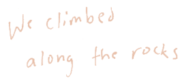
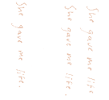
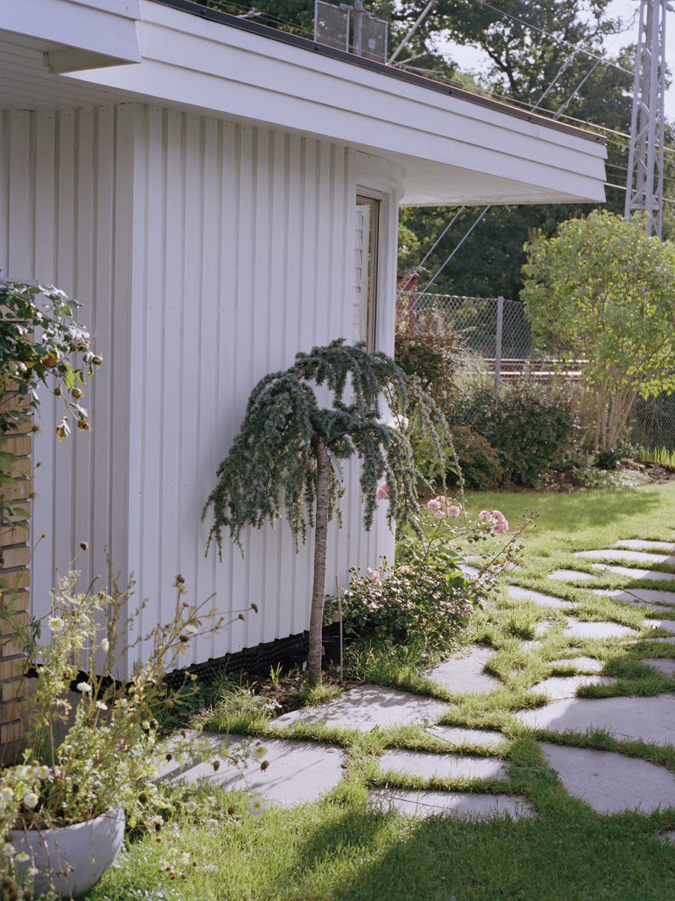
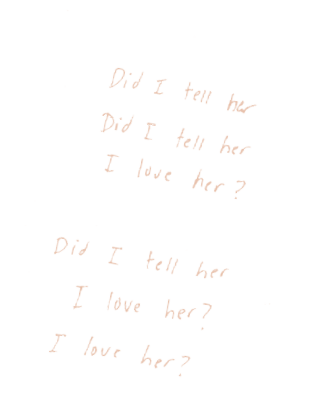
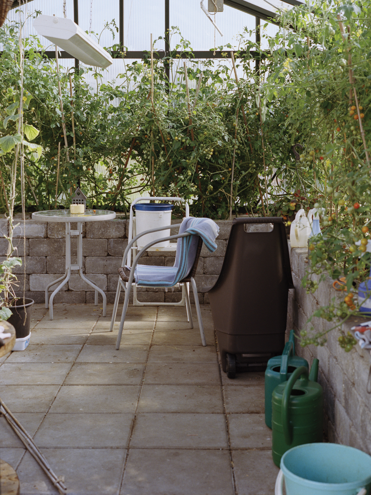
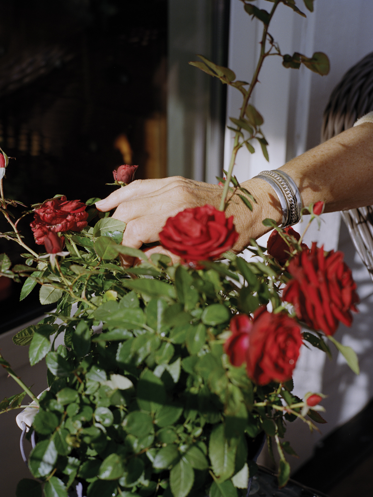

CROSSING PATHS
Mother gets angry at the television, brooding over her cigarette in Nancy’s living room. They do not have enough words in this language, as if she could have sat still through a program anyway. They are always repeating themselves, using English as substitutes for words that have not yet been coined.
Did I tell her I love her? Jeg elsker deg. She lived half of her life surrounded by English, basking in our self-indulgent tongue, soaking in our traditions and lack of. Perhaps there is no reason to come back to her home country without her there. Is it only prolonging our pain? As I sit at the front row, all I see are the flowers covering the floor. Her friends that I will never know have come to say goodbye, though maybe they were able to say it in person like I could not.


The hardest thing for me to do was to leave my daughters. They were angry, hanging in the balance of adolescence and childhood, searching for reasons in our parting. But she needed me, I couldn’t leave her alone. She gave me life and kept me with her when my father would no longer let me come home. How could I leave her now?
Mother, oh mother, give my life if you cannot give yours. I cannot take your place.


The first memory I have of us is during recess, racing through the city to the store that her mother worked at. Randy would give us tiny lipsticks and eyeshadow samples. It was an affair for us, flirting with the idea of flirting, tracing our fingers around the rest of our lives. Be a lady. Sit, stand, fetch. When will our daughters play together like we did?

